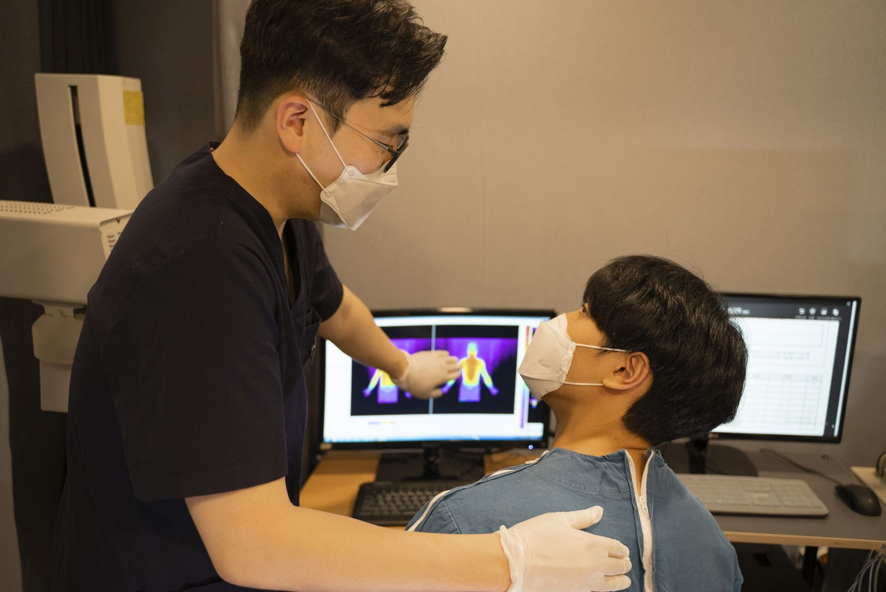

한 줄 답변
역 계단을 오르내릴 때 어지럼과 휘청거림이 반복되면 넘어질 위험이 있어, 어지러운 순간과 양상, 혈압과 복용 약, 잠과 식사를 먼저 묻고 안전하게 다니는 방법을 함께 정리하며, 갑작스러운 신호가 있으면 바로 응급 진료를 안내합니다.
역 계단을 오르내릴 때 어지럼과 휘청거림이 반복되면 넘어질 위험이 있어, 어지러운 순간과 양상, 혈압과 복용 약, 잠과 식사를 먼저 묻고 안전하게 다니는 방법을 함께 정리하며, 갑작스러운 신호가 있으면 바로 응급 진료를 안내합니다.
여쭙는 것
- 어지러움이 빙빙 도는 느낌인가요, 눈앞이 캄캄해지는 느낌인가요?
- 계단을 오를 때인가요, 내려갈 때인가요?
- 혈압약이나 다른 약을 드시고 계신가요?
생활에서 해 볼 것
- 계단에서는 꼭 난간을 잡고 한 칸씩 천천히 오르내리기
- 가능하면 엘리베이터나 에스컬레이터 이용하기
- 앉았다 일어서거나 계단을 오르기 전 잠시 숨 고르기
한의원에서 함께 살필 것
- 어지럼이 반복되는 경우 어지러운 양상과 잠, 식사, 몸의 기력을 함께 살핍니다.
- 목과 어깨가 뻣뻣하고 두통이 함께 있는 경우 몸의 긴장을 함께 살핍니다.
- 필요하다고 판단되면 신경과나 이비인후과 검사를 안내합니다.
먼저 확인이 필요한 신호
- 갑자기 말이 어눌해지거나 한쪽 팔다리에 힘이 빠지는 경우 (바로 119)
- 심한 두통과 함께 어지럽고 토하는 경우 (바로 응급실)
- 가슴이 두근거리며 정신을 잃을 것 같았던 경우
상도역이나 노량진역을 이용하시는 어르신 가운데 계단을 오르내리다 눈앞이 핑 돌거나 다리가 휘청해 난간을 꽉 잡았다는 분이 있습니다. 한 번 그러고 나면 외출 자체가 겁이 난다고 하십니다.
먼저 이렇게 여쭙니다
- 어지러움이 빙빙 도는 느낌인가요, 눈앞이 캄캄해지는 느낌인가요?
- 계단을 오를 때인가요, 내려갈 때인가요?
- 혈압약이나 다른 약을 드시고 계신가요?
- 식사를 거르거나 물을 적게 드신 날 더 심한가요?

일상에서 먼저 해 볼 수 있는 것
- 계단에서는 꼭 난간을 잡고 한 칸씩 천천히 오르내리기
- 가능하면 엘리베이터나 에스컬레이터 이용하기
- 앉았다 일어서거나 계단을 오르기 전 잠시 숨 고르기
- 외출 전 물을 한 잔 마시고 끼니 거르지 않기
한의원에서 함께 살필 수 있는 경우
- 어지럼이 반복되는 경우 어지러운 양상과 잠, 식사, 몸의 기력을 함께 살핍니다.
- 목과 어깨가 뻣뻣하고 두통이 함께 있는 경우 몸의 긴장을 함께 살핍니다.
- 필요하다고 판단되면 신경과나 이비인후과 검사를 안내합니다.
진료실에서 이야기를 들은 뒤 어떤 방법이 맞을지 함께 정합니다.
이런 증상은 먼저 확인이 필요합니다
- 갑자기 말이 어눌해지거나 한쪽 팔다리에 힘이 빠지는 경우 (바로 119)
- 심한 두통과 함께 어지럽고 토하는 경우 (바로 응급실)
- 가슴이 두근거리며 정신을 잃을 것 같았던 경우
복용 중인 약은 처방한 의사와 상의 없이 줄이거나 끊지 않습니다.
자주 묻는 질문
어지러울 때는 바로 앉아야 하나요?
네, 넘어지지 않도록 그 자리에서 난간을 잡고 앉아 쉬는 것이 안전합니다.
혈압약 때문일 수도 있나요?
약에 따라 일어설 때 어지러울 수 있습니다. 처방한 의사와 상의하시고 약은 임의로 줄이지 마세요.
진료 시간은 어떻게 되나요?
좋은꿈참사랑한의원 노량진점은 평일 09:30~20:00(점심 13:00~14:00), 토·일·공휴일 09:30~15:00에 진료합니다.
이 글은 일반적인 건강 정보이며 개인의 진단이나 치료를 대신하지 않습니다. 증상이 있거나 복용 중인 약이 있다면 진료를 통해 확인하세요. 치료 효과는 개인마다 다를 수 있습니다.
지난 이야기부터 이어서 묻습니다
좋은꿈참사랑한의원 노량진점은 재진 때 지난번 이야기부터 이어서 여쭙니다. 진료시간과 예약은 오시는 길에서 확인하세요.
좋은꿈참사랑한의원 노량진점은 재진 때 지난번 이야기부터 이어서 여쭙니다. 진료시간과 예약은 오시는 길에서 확인하세요.